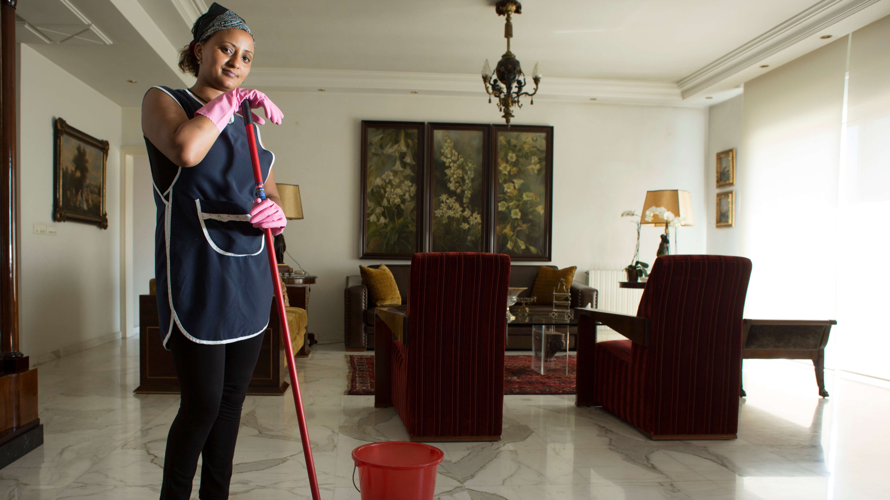

María, 45 años – Ex trabajadora doméstica
Tras una enfermedad crónica, perdió su empleo y su vivienda. Durante 3 años vivió en la calle, hasta que un centro comunitario le brindó acompañamiento y hoy trabaja en una panadería del centro. “Lo más difícil no es el hambre, es la soledad”, dice.

Andrés, 29 años – Exhabitante de calle
Creció sin familia, cayó en las drogas y durmió en el Cartucho. Tras un proceso de rehabilitación liderado por voluntarios, ahora da charlas de prevención en colegios públicos.

Luz y Mateo – Madre e hijo desplazados
Víctimas del conflicto armado, llegaron a Bogotá sin redes ni apoyo. Dormían en parques hasta que fueron acogidos por una fundación. Hoy, Luz estudia enfermería y su hijo asiste al colegio.

Luis, 38 años – Exconstructor sin seguridad social
Después de un accidente laboral, no pudo seguir trabajando. Hoy colabora con una ONG como ayudante de bodega mientras espera una oportunidad estable.

Diana, 19 años – Expulsada por su orientación sexual
Su familia la echó de casa por ser lesbiana. Ahora cursa segundo semestre de diseño gráfico gracias a una beca.

Raúl, 67 años – Adulto mayor sin pensión
Trabajó informalmente toda su vida. Al envejecer, perdió su fuerza laboral y no tenía pensión. Fue rescatado por una fundación que ofrece albergue nocturno.

Camila, 27 años – Migrante venezolana
Sin recursos ni documentos, terminó durmiendo con su hijo en la calle. Hoy vende empanadas y alquila una habitación.

José, 12 años – Niño habitante de calle
Vendía dulces y dormía en parques. Una ONG lo rescató y ahora vive en una casa de acogida donde recibe educación.

Mónica, 34 años – Víctima de violencia intrafamiliar
Huyó con sus dos hijas. Hoy vive en una casa refugio mientras cursa un programa técnico de cocina.

Orlando, 48 años – Excombatiente reinsertado
Tras desmovilizarse, cayó en adicciones. Hoy trabaja como vigilante y apoya procesos comunitarios.

Valentina, 31 años – Transgénero rechazada
Rechazada desde su adolescencia, vivió en la calle. Ahora es activista por los derechos de las personas trans.

Manuel, 22 años – Universitario desplazado
Desplazado por grupos armados, hoy gracias a una fundación, volvió a estudiar ingeniería.

Elisa y Fernando – Pareja mayor desplazada
Perdieron su finca y ahora viven en un cambuche. Reciben apoyo de voluntarios que les llevan alimentos y abrigo.